Ga 대신 F 첨가로 In-rich IZO TFT의 안정성을 확보하는 공정 레시피를 세워, 이동도 2.6배, SS 1/5.8, hysteresis 7.8 → 1.03 V로 개선하고 2T1C 화소 구동을 확인한 프로젝트입니다.
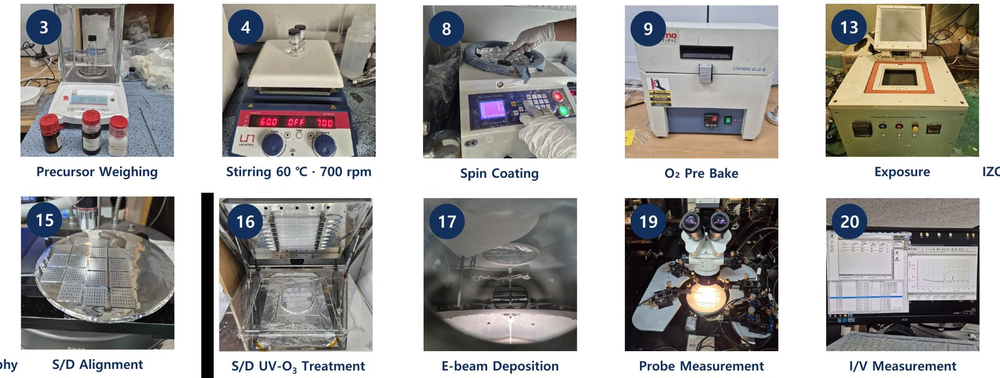
In-rich IZO는 이동도가 높지만 off-current와 Vth가 불안정합니다. 이 프로젝트는 높은 이동도를 살리면서 불안정을 억제할 Ga 대체 첨가물을 찾고, 용액공정 TFT로 2T1C 화소 구동을 확인하는 것을 목표로 했습니다.
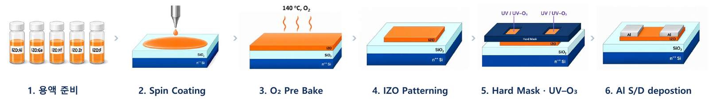
용액 합성부터 I-V 측정까지 전 공정을 직접 수행했습니다. 같은 조건에서도 결과가 재현되지 않아, 공정 전체에서 변인이 될 수 있는 32항목을 정리해 하나씩 고정하는 방식으로 기준 공정을 세웠습니다.
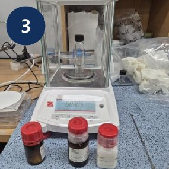
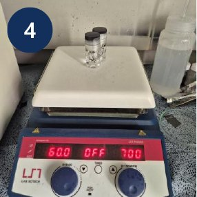
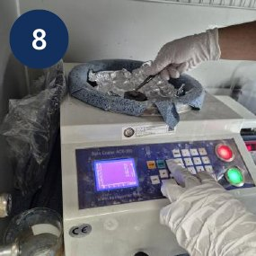
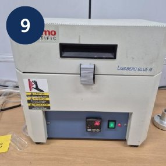
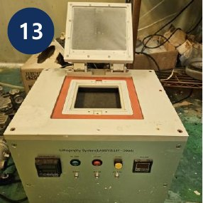
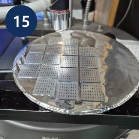
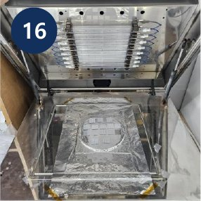
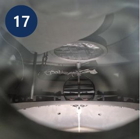
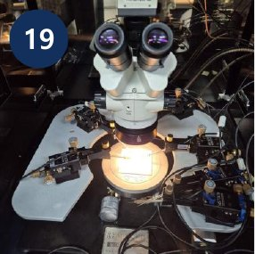
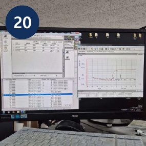
| 변수 | 검토 범위 | 채택 조건 |
|---|---|---|
| 조성 소재 | IGO, IZO | IZO |
| In:Zn 비율 | 4:1 – 14:1 | 10:1 |
| 농도 | 0.1 – 0.3 M | 0.1 M |
| 스핀 속도 | 500 → 3000 / 4000 / 5000 rpm | 500 → 4000 rpm |
| soft-bake 온도 | 130 – 160 ℃ | 140 ℃ (4:1), 130 ℃ (10:1) |
| soft-bake 분위기 | Air, O2 | O2 |
| UV-O3 위치 | 없음, S/D, 채널, 둘 다 | S/D contact 2 min |
| 400 ℃ 열처리 시간 | 1 – 10 min | 1 min |
| 습도 | 관리 전후 비교 | RH 45% 이하, 건조 보관 |
| 첨가물 | F, Zr, Al, Hf, Ga 농도별 | F 8% |
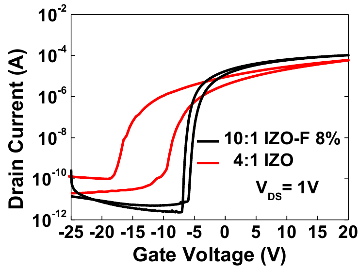
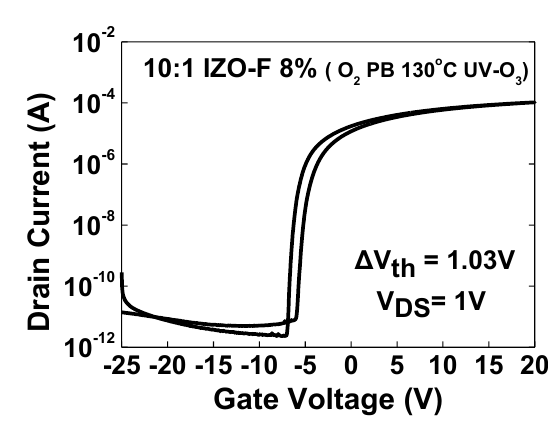
| 지표 | 초기 4:1 IZO | 4:1 레시피 최적화 | 10:1 IZO-F 8% | 변화 |
|---|---|---|---|---|
| on/off 전류비 | 6.2×105 | 5.1×106 | 4.5×107 | 73배 |
| SS (mV/dec) | 694 | 237 | 120 | 약 1/5.8 |
| Vth (V) | −17 | −0.8 | −4.9 | +12.1 V |
| 이동도 (cm2/Vs) | 1.4 | 2.06 | 3.62 | 약 2.6배 |
| hysteresis (V) | 7.8 | – | 1.03 | −6.77 V |
4:1 레시피 최적화는 soft-bake 140 ℃, O2 분위기, S/D UV-O3 적용. In:Zn 12:1 이상은 막질 저하로 on-current가 오르지 않아 10:1 선택. 첨가물 5종 중 F 8%가 off-current, SS, 이동도의 균형이 가장 우수. 최적 칩 9개 위치의 hysteresis 평균 0.6 V. 2T1C 화소회로는 TCAD mixed-mode 시뮬레이션으로 구동 확인.